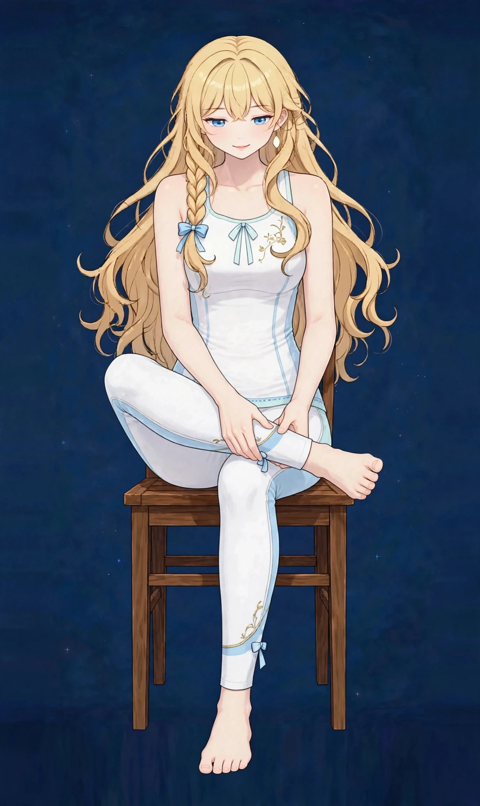

梅田で全身の疲れケア｜寝ても抜けない疲労感に90分全身オイル疲労・張り
「寝ても疲れが取れない」「休日は動く気になれない」——全身の疲れは、特定の部位ではなく体全体のコンディションの問題です。仕事帰りの時間に、頭を空っぽにして体を預ける時間そのものが大切になります。
全身の疲れはどんな状態か
全身の疲れは、肩や腰といった特定の部位ではなく、「体全体が重い」「寝ても抜けた気がしない」という広い範囲の疲労感を表す言葉です。一時的な疲れは休息で回復しますが、忙しさや緊張が長く続くと、回復が追いつかないまま翌日に持ち越す状態になりやすくなります。
ポイントは、疲れの感じ方には個人差が大きいことです。同じ生活でも平気な時期とつらい時期があり、季節の変わり目や、頑張り続けた仕事の山場のあとに強く表れる方もいます。「気のせい」と片づけず、体を休ませる時間を意識的につくることが、付き合い方の基本になります。
こんなサインはありませんか？ — 全身の疲れのチェックリスト
- 寝ても疲れが取れた気がしない
- 休日は動く気になれない
- 体全体が重く感じる
- 頭を空っぽにして休みたい
- 朝起きても体が重く、布団から出るのに時間がかかる
- 休日に寝だめしても疲れが残る
- 頭の疲れと体の疲れが両方ある気がする
- 以前より回復に時間がかかるようになった
当てはまる項目が多いほど、負担がたまりやすい生活が続いている可能性があります。次の「要因」と見比べて、どこに負担が集まっているか確かめてみてください。
全身の疲れにつながりやすい要因
- 回復より負担が上回る生活：仕事や家事の負担そのものより、「休む時間が足りないまま次の日が始まる」ことの繰り返しが、全身の疲れの大きな背景です。
- 眠りの質：就寝前の画面、夕方以降のカフェイン、寝室の明るさや音などは、眠りの深さに影響しやすい要素です。睡眠時間が足りていても浅いと、疲れは抜けにくくなります。
- 緊張の抜けない一日：集中や気遣いが続く日は、体を大きく動かしていなくても疲労感が強くなります。肩や首の緊張が、頭の疲れと一緒に残りやすい状態です。
- 運動不足と血の巡り：動く機会が減ると巡りが滞りやすく、体が重く感じやすくなります。反対に、急な激しい運動はかえって疲れを持ち越すこともあります。
- 食事と水分のリズム：食事を抜く、夕食が遅い、水分が少ないといったリズムの乱れは、一日のエネルギーの波を大きくし、だるさとして表れやすくなります。
- 季節の変わり目：気温や気圧の変化が大きい時期は、体が環境に合わせようとして余分に力を使いやすく、理由のはっきりしない疲れを感じる方が増えます。
図1｜全身の疲れで負担が集まりやすい部位

東洋医学から見た考え方
東洋医学では、全身の疲れは「気（エネルギー）」の不足や巡りの低下と関連づけて考えます。無理に動かすのではなく、まずは巡りを意識した施術で体をほぐし、休息に向かう状態づくりをサポートします。
全身の巡りを考えるうえでは、呼吸と関わる肺経、消化吸収と関わる脾経・胃経、体の土台と関わる腎経など、複数の経絡を横断して見立てます。当店の経絡ページでも、それぞれのラインの考え方を紹介しています。施術では一つの経絡に絞らず、その日の状態に合わせて全身のラインを順にほぐしていきます。
代表的なツボ
全身のケアで昔からよく挙げられる代表的なツボを紹介します。どれもご自宅で触れやすい場所にあります。指の腹で5秒ほど押してゆっくり離す、を数回繰り返すのが基本です。
位置：内くるぶしのいちばん高いところから、指4本分ほど上がった、すねの骨の内側の縁。押し方：親指の腹で骨の内側をなぞるように押します。冷えやむくみ感のケアでも挙げられるツボです。
図2｜全身ケアで挙げられるツボの位置
おすすめ施術
オイルマッサージ
90分の全身ケアで、頭から足先までを順にほぐします。香りのあるオイルを使い、施術中は会話少なめで静かに過ごすこともできます。ご希望はお気軽にどうぞ。
進め方は、背中から腰、脚、首肩、頭部までを一定のリズムで順にほぐし、全身の巡りを意識しながら進める流れです。張りの強い部位があれば、その都度お声がけしながら時間を配分します。途中で眠ってしまっても大丈夫です。
香りのオイルを使い、施術中は会話少なめで静かに過ごすこともできます。「頭を空っぽにして休みたい」という方には、施術そのものを休息の時間として使っていただけるよう、部屋の明るさや音にも配慮しています。
自宅でできるセルフケア
全身の疲れへのセルフケアは、新しい習慣を増やすより「回復の邪魔をしない工夫」が中心です。無理のない範囲で取り入れてみてください。
- 1．湯船に10分つかる疲れた日ほどシャワーで済ませず、ぬるめのお湯に10分ほどつかります。体が温まると緊張が抜けやすく、入浴そのものが一日の区切りになります。就寝の1〜2時間前が目安です。
- 2．足三里と三陰交を押す入浴後、すねの外側の足三里と、内くるぶしの上の三陰交を、それぞれ5秒×5回ほど押します。脚の重さが気になる日の締めくくりに取り入れやすいケアです。
- 3．画面を置く30分週に数回でも、スマホを置いて過ごす30分を作ります。頭の緊張が抜ける時間は、体の回復ともつながります。湯船や散歩と組み合わせるのもおすすめです。
- 4．起床時刻をそろえる休日も起床時刻を大きくずらさないことで、一日のリズムが安定しやすくなります。寝だめより、就寝時刻を少し早める方が疲れを持ち越しにくいとされます。
図3｜セルフケア「入浴後のツボ押し」の手順

場面別の注意
仕事の山場を越えたあと
頑張り続けた直後ほど、疲れは遅れて表れます。山場のあとの週末は予定を詰め込まず、回復のための余白を先に確保してください。
平日の夜
帰宅が遅い日は、入浴と就寝の準備を優先し、画面を見る時間を区切るだけでも翌朝の感じが変わります。夕方以降のカフェインも眠りの浅さにつながることがあります。
休日の過ごし方
一日中寝て過ごすより、軽く散歩して昼に光を浴びる方が、夜の眠りと翌日の回復につながりやすいとされます。動く日と休む日のメリハリを作ってみてください。
受診の目安
次のような場合は、サロンでのケアの前に医療機関への受診をおすすめします。
- 疲れが数週間以上続き、日常生活に支障が出ている
- 発熱、体重の急な減少、動悸などを伴っている
- 気分の落ち込みが強く、長く続いている
- 日中の強い眠気で仕事や運転に支障がある
- 休んでも悪化していく感じがある
当店は医療機関ではなく、診断は行いません。迷うときは、まずかかりつけの医療機関にご相談ください。
よくある質問
Q．全身を90分で全部みてもらえますか？
はい。90分の全身コースでは、背中・腰・脚・首肩・頭部までを順にほぐします。特につらい部位があれば、当日にうかがって配分を調整します。
Q．施術中に眠ってしまっても大丈夫ですか？
はい、問題ありません。眠ってしまう方は多くいらっしゃいます。静かに過ごしたい方は、予約時や来店時にその旨をお伝えください。
Q．疲れが強い日は、強い圧の方がよいですか？
疲れが強い日ほど、体は緊張しています。いきなり強い圧を入れるより、広くほぐしてから深い圧を重ねる方が体への負担が少ないため、その順番で進めます。圧の好みはその都度調整できます。
Q．どのくらいのペースで通うのがよいですか？
決まった正解はありません。忙しい時期だけ集中的に使う方も、月1回のメンテナンスとして続ける方もいます。ご自身の生活リズムに合わせてご利用ください。
関連するお悩みページ
ご予約
ステラポラリス（大阪・梅田／女性専用）｜オイルマッサージ 90分 10,000円｜月〜土 17:00〜22:00・完全予約制
ご予約はLINE公式アカウントで受け付けています。希望の日時と、気になる場所を送ってください。